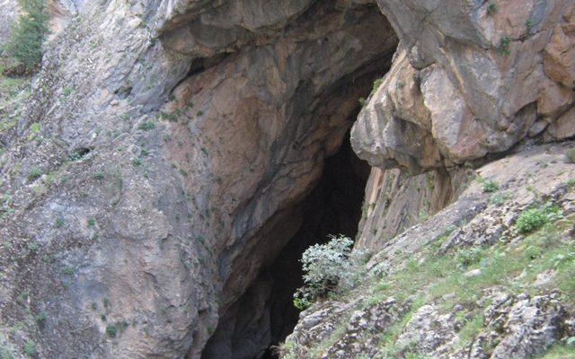
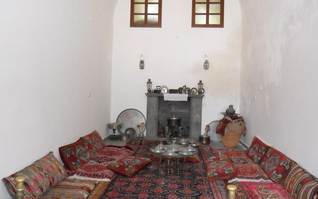

Inicio › Qué ver, provincia por provincia › Diyarbakır
La guía Kültür Varlıkları reúne 17 lugares en Diyarbakır: 6 castillo y edificio histórico, 5 museo, 3 yacimiento arqueológico, 3 edificio religioso. A continuación encontrará lo más destacado, un mapa y la lista completa.
⭐ Lo más destacado

1 · Diyarbakır · MuseoCasa de Cahit Sıtkı Tarancı - Museo Etnográfico
El Museo Cahit Sıtkı Tarancı es la casa tradicional del histórico distrito de Sur, en Diyarbakır, donde nació el poeta, querido por generaciones gracias a su poema…

2 · Diyarbakır · Yacimiento arqueológicoTúnel del Tigris (cuevas de Birkleyn)
En Lice (Diyarbakır), túnel natural y cuevas por donde corre un afluente del Tigris.

3 · Diyarbakır · MuseoMuseo Arqueológico de Diyarbakır
El Museo Arqueológico de Diyarbakır se encuentra entre los edificios restaurados del histórico İçkale (ciudadela interior) y narra decenas de miles de años de historia…
🗺 En el mapa
📍 Todos los lugares (17)
Castillo y edificio histórico (6)
 Murallas de DiyarbakırCastillo y edificio histórico
Murallas de DiyarbakırCastillo y edificio histórico Castillo de Eğil y tumbas de los profetasCastillo y edificio histórico
Castillo de Eğil y tumbas de los profetasCastillo y edificio histórico
Gazi KöşküCastillo y edificio histórico Han de Hasan PaşaCastillo y edificio histórico
Han de Hasan PaşaCastillo y edificio histórico Puente de MalabadiCastillo y edificio histórico
Puente de MalabadiCastillo y edificio histórico Puente de los Diez Ojos (Puente del Tigris)Castillo y edificio histórico
Puente de los Diez Ojos (Puente del Tigris)Castillo y edificio históricoMuseo (5)
Casa de Cahit Sıtkı Tarancı - Museo EtnográficoMuseoMuseo Arqueológico de DiyarbakırMuseo Museo Ziya GökalpMuseoCasa Museo de Atatürk en DiyarbakırMuseoCasa Museo de Atatürk en SilvanMuseo
Museo Ziya GökalpMuseoCasa Museo de Atatürk en DiyarbakırMuseoCasa Museo de Atatürk en SilvanMuseoYacimiento arqueológico (3)
Túnel del Tigris (cuevas de Birkleyn)Yacimiento arqueológico Fortaleza de ZerzevanYacimiento arqueológico
Fortaleza de ZerzevanYacimiento arqueológico ÇayönüYacimiento arqueológico
ÇayönüYacimiento arqueológico
Fortaleza de ZerzevanYacimiento arqueológicoÇayönüYacimiento arqueológico